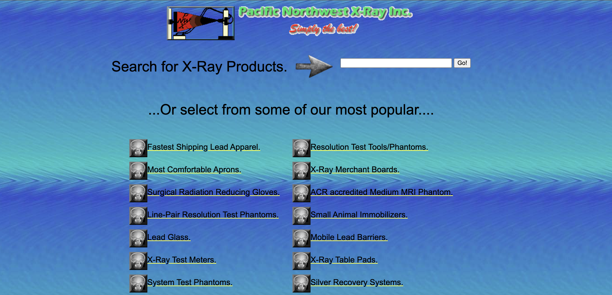
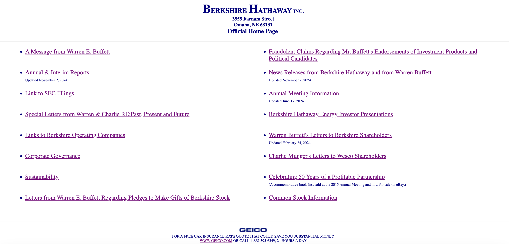

Adam Ahmadzai
Good and Bad Design Examples
land-book.comThis website is a good example of a good design because it does a good job organizing the navaigation at the top, it allows you to filter what you are looking for, and their are thumbnails for links you may be interested in.
pnwx.com
This websites is a good example for a bad design because it lacks proper organization, with no nav bar, lack of font color, and weak combination of colors, leading to navigation difficulty.
berkshire-hathaway.com
This websites is a good example for a bad design because it lacks color, images, and there are way too many links of the first pages stacked up, which can make it very hard to navigate through efficiently.